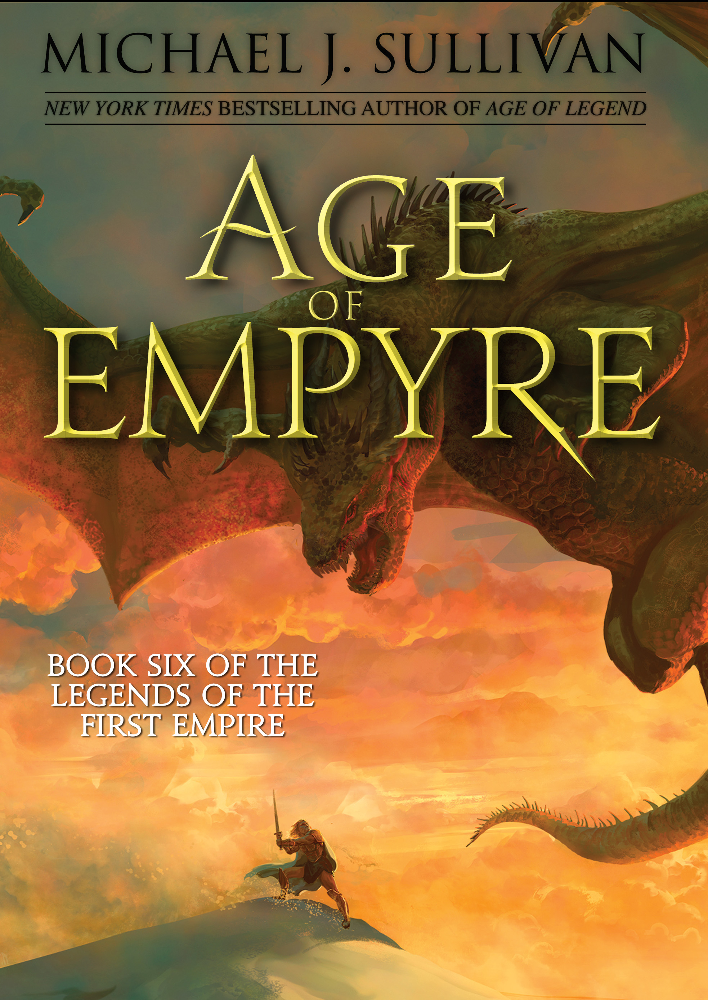

"Age of Empyre"
- Read on 2023-07-07
- Rating: ️️️️️
- Format: 🎧 (16 hours 42 minutes)
This was a good conclusion to this series. My review will be more focused on the series, as opposed to this final book. I'm totally unfamiliar with any other books by Michael J. Sullivan, the author. So, I'm not aware of how well this works as a prequel to other things. As a fantasy series, this worked out well enough. Sullivan has built a number of engaging cultures and people. His "magic system" is unique enough, and still has lots of room for growth. There were a few things that felt like gimmicks that I didn't care for - cliffhanger endings, the high concentration of significant characters in one group/society, and "let's go into an alternate dimension for them to keep going". Despite my qualms, I wasn't sad to keep reading the next book and I am a bit sad the series is finished.
Purely for comparison purposes, this series didn't feel nearly as engaging as some of Brandon Sanderson's. But it kept my attention well enough.
- Prior: Age of Death
- Next: Yumi and the Nightmare Painter